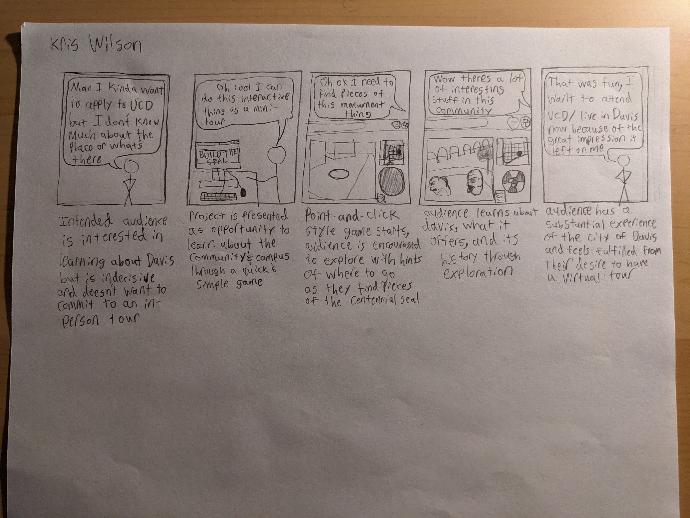
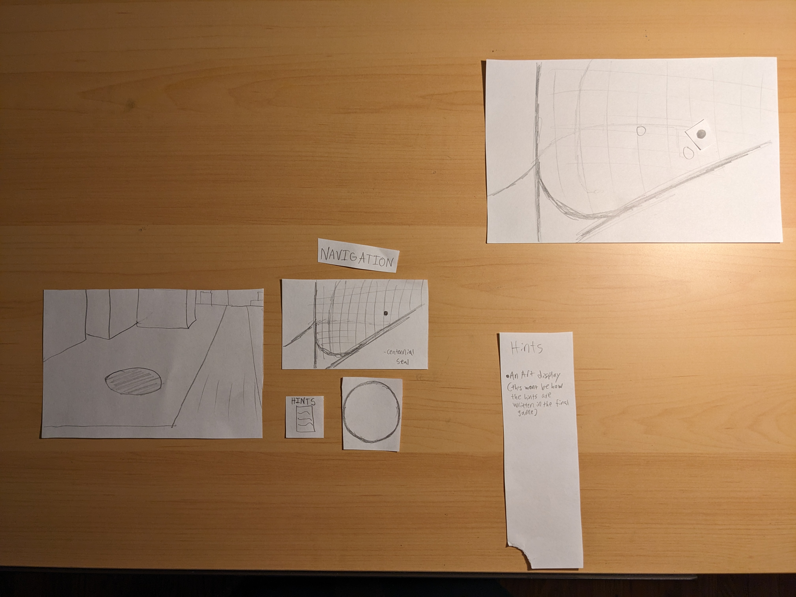

Capstone Project: User Journey test and Paper Prototype
User Journey
I presented my user journey with the goal of presenting a new form of virtual tour for undergraduates looking to apply to UCD or people wanting to move to Davis in general to give them an idea of the community and city layout. The only concern at this point is that contacting people like this will be difficult for me. Other than that, this development exercise was successful in fleshing out the direction that the project will be taking.
Paper Prototype
This was a good opportunity to experiment with the layout of the project. The closely packed collection of elements on the left is the main display of the page, and the long vertical paper and the largest paper in the corner are popups that will be displayed with certain interactions. During testing, it became clear that the design of the UI needed some significant edits to ensure that people will not be confused by what is interactable and what isn't, as well as to what degree elements can be interacted with. The most notable example of this was that the intention of "clicking" the map to move to different scenes was an effective decision, but must be more clearly communicated to the participant. After taking notes, later iterations will make good use of the information gained from this exercise.